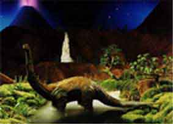
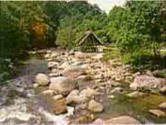
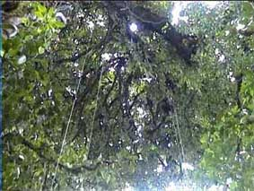

Itinerary
DAY 1: Saturday
You are whisked away by helicopter towards your destination at remote Hell Creek where you head first to the coffee community at the edge of Lost Pine volcano. You rappel from the edge of this mighty precipice down into the lost world 1,500 metres below the volcano rim. Once there we'll stop at the private Brontosaurus breeding colony and snorkel with the shy creatures before some skinny-dipping under the amazing waterfall that cascades down from the rim far above. As you see close-up some of the larger birds of prey you will appreciate that these are truly the descendants of the dinosaurs.
DAY 2: Sunday
The famous Brown Cow Ridge in Kahurangi is the centre of the cloud forest of Fiordland, but the national park is now so popular that people have driven away many of the forest's peaceful native inhabitants. We'll be stopping at the cloud forest, which still retains the peaceful, almost spiritual, quality that made the Lost World so popular. Many of the species no longer sighted in the national park can be seen here. We'll tramp through some bizarre forests which exist only in the clouds in the mountains of Fiordland (and the mists of the gorilla country in Africa). The type of plant life here is pre Jurassic. From the cloud forest we'll descend to the edge of the Corleone volcano, and enjoy our own hot springs in the jungle.
DAY 3: MONDAY
What a beautiful way to start the last day - climbing into the forest canopy, hanging on ropes and harnesses, moving from tree to tree as we all dreamed of doing when we saw Tarzan do it. After the ropes we'll head for the primary forest on this property, hiking within view of magnificent Australus Volcano. Want more? Grab your horse, and we'll visit some of the local fossil sights in the remote villages of this primeval forest. Before we know it the helicopter arrives to return us to civilisation, leaving some unforgettable memories.